קאפיטל 19
אויפהאלטונג און סערוויס
זייטן 302–321 אינעם PDF
אייער מעינטענענס פלאן אין קורצן
פאר אייער זיכערהייט זאגט דער אונער'ס מאנואל אז מען זאל דורכפירן אלע אינספעקציעס און מעינטענענס וואס זענען אויסגערעכנט. אויב איר באמערקט עפעס אומגעווענליך, לאזט דעם קאר אינספעקטירן ביי א דילער. דאס איז אריינגערעכנט א נייער קלאנג, א מאדנער גערוך, נידעריגע ברעמז פלואיד, אדער אויל פלעקן אויף דער ערד וואו איר פארקט. דער מאנואל זאגט אויך קלאר אז מען דארף נישט מאכן סערוויס ביי א דילער כדי די גאראנטיעס זאלן בלייבן גילטיג.
אין די פאראייניגטע שטאטן מעג יעדע ריפעיר שאפ אדער יעדער מענטש אליין אנהאלטן, טוישן אדער פאררעכטן די עמיסיע-קאנטראל טיילן און סיסטעמען, אבי די טיילן זענען "certified" לויט די EPA סטאנדארטן. דער מאנואל צייכנט געוויסע הויפט-זאכן מיט א # סימבאל: דעם עגזאסט סיסטעם, און די גאז ליניעס און פארבינדונגען. לויט די שטאט און פעדעראלע געזעצן, ווען מען דרייט זיך אויס פון מעינטענענס אויף די זאכן, מאכט דאס נישט בטל די עמיסיע גאראנטיעס. פונדעסטוועגן זאגט Honda אז מען זאל מאכן אלע מעינטענענס אין די צייטן וואס ווערן געוויזן אויפן driver information interface (דער אינפארמאציע-סקרין פארן דרייווער). נאך יעדן סערוויס, שרייבט עס אריין אין דעם באזונדערן מעינטענענס ביכל.
אויב איר ווילט מאכן די ארבעט אליין, מאכט קודם זיכער אז איר האט די נויטיגע געצייג און די קענטעניש. פאר קאמפליצירטע ארבעטן וואס פאדערן מער קענטעניש און עקוויפמענט, פארקויפט Honda א סובסקריפשאן צו איר Service Express וועבזייטל אויף techinfo.honda.com.
רעגולערע און פעריאדישע אינספעקציעס
Honda טיילט אייערע אייגענע טשעקס אין צוויי גרופעס. Routine (רעגולערע) אינספעקציעס מאכט מען פאר א לאנגע נסיעה, ווען מען וואשט דעם קאר, אדער ווען מען פילט אן גאז. Periodic (פעריאדישע) אינספעקציעס מאכט מען אין פעסטע צייטן. קיינע פון זיי דארף נישט קיין געצייג. א גאנג ארום דעם קאר מיט די לייכטן אן, א קוק אויף די טייערס און א בליק אונטער דער האוד נעמט נאר עטליכע מינוט.
אינספעקציע צייטפלאן פארן אייגנטימער
| ווען | וואס צו טשעקן |
|---|---|
| פאר לאנגע נסיעות, וואשן, גאז אנפילן | רעגולערע אינספעקציע ארום דעם קאר |
| יעדן חודש | ברעמז פלואיד שטאנד |
| יעדן חודש | טייער דרוק; אפגעריבנקייט פונעם טרעד און אריינגעשטעקטע זאכן (נעגל, שטיינער) |
| יעדן חודש | צי אלע דרויסנדיגע לייכטן ארבעטן |
| יעדן חודש | באטעריע טערמינאלן אויף זשאווער |
| כאטש יעדע 6 חדשים | דער צושטאנד פון די ווייפער בלעיטס |
| יעדעס מאל גאז אנפילן (רעקאמענדירט) | מאטאר אויל שטאנד און מאטאר קולענט שטאנד |
Honda'ס אפיציעלע ספעציפיקאציעס ווייזן צוויי נומערן וואס עס לוינט צו וויסן. ערשטנס, דער EX איז א טייל פונעם Honda Maintenance Program, אנגעגעבן אלס 1 יאר אדער 12,000 מייל. צווייטנס, די tune-up צייט איז אנגעגעבן אלס בערך 100,000 מייל, אן קיין באשטימטע tune-ups. עס איז נישטא קיין פעסטער, אלטמאדישער tune-up פלאן. אנשטאט דעם זאגט אייך דער קאר אליין וואס ער דארף און ווען, דורכן Maintenance Minder (דער מעינטענענס דערמאנער). דער סיסטעם איז דער צענטער פון אייער גאנצן סערוויס פלאן.
דער Maintenance Minder
דער Maintenance Minder (דער מעינטענענס דערמאנער) פאלגט נאך ווי אזוי דער מאטאר ווערט טאקע גענוצט, און רעכנט אויס וויפיל לעבן עס איז נאך געבליבן אין דעם מאטאר אויל. ער ווייזט דאס אלס א פראצענט. ער ווייזט אויך קאודס פאר די מעינטענענס זאכן וואס מען זאל מאכן צוזאמען מיט דעם נעקסטן אויל טויש. קורצע נסיעות, קאלטע וועטער און שווערע לאסטן פארברויכן דעם אויל שנעלער, דערפאר קענען צוויי אייגנטימער זען גאר אנדערשע צייטן.

דער דיספליי גייט אין טרעפ, נישט יעדן איינציגן פראצענט:
ווי אזוי דאס אויל לעבן ווערט געוויזן
| געוויזן | אויסגערעכנטע אויל לעבן |
|---|---|
| 100% | 100 ביז 91% |
| 90% | 90 ביז 81% |
| 80% | 80 ביז 71% |
| 70% | 70 ביז 61% |
| 60% | 60 ביז 51% |
| 50% | 50 ביז 41% |
| 40% | 40 ביז 31% |
| 30% | 30 ביז 21% |
| 20% | 20 ביז 16% |
| 15% | 15 ביז 11% |
| געוויזן | אויסגערעכנטע אויל לעבן |
|---|---|
| 10% | 10 ביז 6% |
| 5% | 5 ביז 1% |
| 0% | 0% |
טשעקן דאס אויל לעבן אין יעדע צייט
אייער EX האט דעם 7-אינטש מיטער, וואס דער מאנואל רופט דעם A-type meter (A-טיפ מיטער). די קנעפלען אויפן שטייער-ראד און די מיטער סקרינס ווערן ערקלערט אין קאפיטל 6.
זען דעם Maintenance Minder (A-type מיטער)
- שטעלט דעם Power מאדָע אויף ON.
- דריקט דעם home קנעפל אויפן שטייער-ראד.
- דרייט דאס לינקע selector ראדל ביז דער Maintenance Minder סימבאל ווערט געוויזן.
- דריקט דאס לינקע selector ראדל צו עפענען דעם Maintenance Minder סקרין. עס ווייזט זיך דער פראצענט פונעם מאטאר אויל לעבן, צוזאמען מיט די מעינטענענס זאכן וואס קומען באלד.
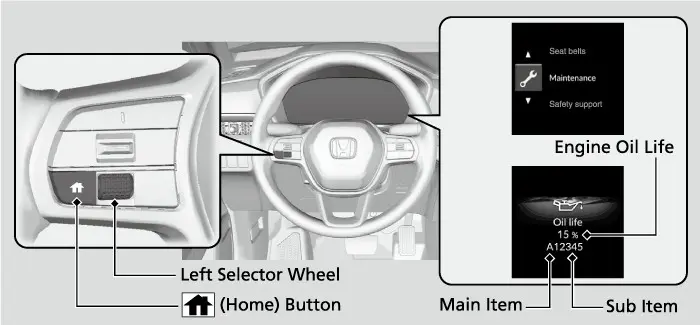
רוב מאל דארפט איר נישט קוקן. ווען דאס אויל לעבן פאלט אונטער 15 פראצענט, ווייזן זיך Maintenance Minder מעלדונגען אויפן driver information interface יעדעס מאל וואס איר שטעלט דעם Power מאדָע אויף ON. זיי זאגן אייך ווען צו טוישן דעם אויל, אדער ווען צו ברענגען דעם קאר פאר די אויסגערעכנטע סערוויסעס. א גוטע געוואוינהייט: מאכט אפוינטמענט פאר סערוויס גלייך ווען די ערשטע מעלדונג ווייזט זיך, נישט ווען דער נומער קומט אן צו נול.
די דריי ווארענונג שטאפלען
Maintenance Minder מעלדונגען
| מעלדונג | אויל לעבן | וואס עס מיינט |
|---|---|---|
| Maintenance Due Soon | 15 ביז 6% | אינספעקטירט און מאכט סערוויס אויף די זאכן באלד |
| מעלדונג | אויל לעבן | וואס עס מיינט |
|---|---|---|
| Maintenance Due Now | 5 ביז 1% | אינספעקטירט און מאכט סערוויס וואס שנעלער |
| Maintenance Past Due | נעגאטיווע דיסטאנץ, בלינקט | אינספעקטירט און מאכט סערוויס גלייך |
Maintenance Due Soon (מעינטענענס קומט באלד) מיינט אז דער אויל קומט נענטער צום סוף פון זיין לעבן. אויפן A-type מיטער, ווען מען דריקט דעם home קנעפל ווערט די מעלדונג אפגעווישט און עס טוישט זיך צו אן אנדער דיספליי. אפווישן די מעלדונג באהאלט זי נאר; עס ריסעט גארנישט. אין דעם שטאפל האט איר געווענליך נאך צייט, דערפאר פלאנירט דעם סערוויס.
Maintenance Due Now (מעינטענענס דארף מען יעצט) מיינט אז דער אויל איז כמעט אנגעקומען צום סוף פון זיין לעבן. דער home קנעפל טוישט ווידער אוועק דעם סקרין, אבער די מעלדונג קומט צוריק ביים נעקסטן סטארט. ווארט נישט אויף א באקוועמען חודש. טוישט דעם אויל אין משך פון טעג.
Maintenance Past Due (מעינטענענס איז שוין פארשפעטיגט) מיינט אז דאס אויל לעבן איז שוין דורך נול. נאכדעם וואס איר פארט מער ווי 10 מייל ווייטער פון דעם פונקט (10 km ביי קאנאדישע מאדעלן), ווייזט זיך א בלינקנדיגע נעגאטיווע דיסטאנץ, וואס ווייזט וויפיל איר זענט שוין פארשפעטיגט. דער system message indicator (סיסטעם מעלדונג ליכטל) צינדט זיך אויך אן אינעם מיטער.

די מעינטענענס קאודס ערקלערט
יעדע מעלדונג טראגט א הויפט קאוד, A אדער B. ביי אמעריקאנער מאדעלן מיינט קאוד A: טוישן דעם מאטאר אויל. קאוד B דעקט אסאך מער:
- טוישן דעם מאטאר אויל און דעם אויל פילטער.
- אינספעקטירן די פארנטיגע און הינטערשטע ברעמזן.
- אינספעקטירן די tie rod עקן, דעם סטירינג gear box און זיינע בוטס (גומע דעקלעך).
- אינספעקטירן די סוספענשאן טיילן און די driveshaft בוטס.
- אינספעקטירן די ברעמז שלאנגען און ליניעס, אריינגערעכנט די ABS/VSA טיילן.
- טשעקן אלע פליסיגקייטן: וויפיל עס איז און אין וועלכן צושטאנד.
- אינספעקטירן דעם עגזאסט סיסטעם און די גאז ליניעס און פארבינדונגען.
א B סערוויס איז באמת א פולער טשעק-אפ אונטערן קאר, נישט נאר אן אויל טויש. קאנאדישע מאדעלן ניצן קאוד 0 פאר אויל און פילטער, און קאוד 9 פאר דעם ברעמז סערוויס און די אינספעקציע ליסטע.
לעבן דעם הויפט אות קענט איר אויך זען איינס אדער מער נומערן. דאס זענען די sub-codes (אונטער-קאודס).
מעינטענענס אונטער-קאודס
| קאוד | סערוויס |
|---|---|
| 1 | ראטירן (איבערבייטן) די טייערס |
| קאוד | סערוויס |
|---|---|
| 2 | טוישן דעם air cleaner element און dust and pollen filter; אינספעקטירן דעם drive belt |
| 3 | טוישן די טראנסמיסיע (CVT) פליסיגקייט |
| 4 | טוישן די spark plugs; אינספעקטירן דעם valve clearance |
| 5 | טוישן דעם מאטאר קולענט |
| 6 | טוישן די rear differential פליסיגקייט (נישט ביי אלע מאדעלן; גילט פאר AWD) |
| 7 | טוישן די ברעמז פלואיד |
קאודס קומען צוזאמען. למשל, B12 מיינט אויל און פילטער, די B אינספעקציע, טייער ראטאציע, און די פילטערס און בעלט.
הערות פאר שווערע באנוץ
דער מאנואל לייגט צו פיר הערות וואס גייען איבער דעם קאמפיוטער אין געוויסע באדינגונגען:
- שטויביגע געגנטן: טוישט דעם air cleaner element יעדע 15,000 מייל (24,000 km).
- מערסטנס שטאט פארן מיט אסאך סאזשע פון אינדוסטריע און דיזל קארס: טוישט דעם dust and pollen fli ter יעדע 15,000 מייל (24,000 km). דאס פאסט פאר שווערע שטאט פארן צווישן טראקס און באסעס.
- רעגולער פארן אין בערג מיט זייער פאמעלעכע גיכקייט, אדער שלעפן א טריילער: דאס הייבט אויף די טראנסמיסיע טעמפעראטור, דערפאר טוישט די טראנסמיסיע פליסיגקייט יעדע 25,000 מייל (40,000 km).
- הילכיגע valves: לאזט זיי אדזשאסטירן בשעת אן A, B, 1, 2 אדער 3 סערוויס.
לויט צייט, ווען דער סקרין שווייגט
אויל און ברעמז פלואיד ווערן אלט אפילו ווען מען פארט כמעט נישט מיטן קאר. אויב עס ווייזט זיך נישט קיין Maintenance Minder מעלדונג אין משך פון 12 חדשים נאכן ריסעטן דעם דיספליי, טוישט דאך דעם מאטאר אויל יעדע יאר. אויב עס ווייזט זיך נישט קיין מעלדונג אין משך פון 36 חדשים נאכן ריסעטן זאך 7, טוישט די ברעמז פלואיד יעדע 3 יאר.
ריסעטן דעם Maintenance Minder
נאך א סערוויס, ריסעט דעם דיספליי כדי דער ציילן זאל אנהייבן פון פריש. א דילער טוט דאס אויטאמאטיש. אויב אן אנדערער מאכט די ארבעט, אריינגערעכנט איר אליין, ריסעט עס אליין.
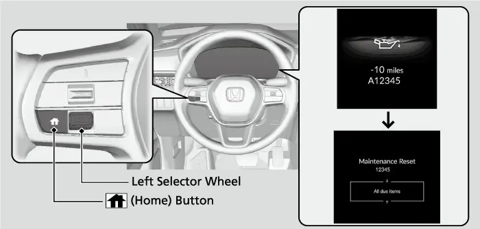
ריסעטן דעם Maintenance Minder (A-type מיטער)
- שטעלט דעם Power מאדָע אויף ON.
- דריקט דעם home קנעפל.
- דרייט דאס לינקע selector ראדל ביז דער Maintenance Minder סימבאל ווערט געוויזן.
- דריקט דאס לינקע selector ראדל צו גיין צום Maintenance Minder סקרין.
- דריקט און האלט דאס לינקע selector ראדל בערך 10 סעקונדעס צו אריינגיין אין ריסעט מאדָע.
- דרייט דאס לינקע selector ראדל צו אויסקלייבן איין מעינטענענס זאך, אדער All due items (אלע זאכן וואס קומען). קלייבט Cancel אויס אויב איר ווילט אנשטאט דעם ענדיגן דעם פראצעס.
- דריקט דאס לינקע selector ראדל צו ריסעטן די אויסגעקליבענע זאך.
- טוט איבער פון שריט 5 פאר יעדע אנדערע זאך וואס איר ווילט ריסעטן.
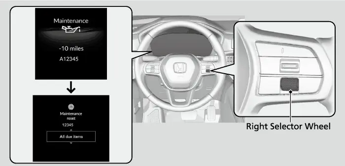
מען קען אויך ריסעטן דעם דיספליי דורך Vehicle Settings אויפן driver information interface. די מעניוס ווערן ערקלערט אין קאפיטל 6.
זיכערהייט פארן ארבעטן אונטער דער האוד
דער מאנואל ווארנט אז נישט-ריכטיגע מעינטענענס, אדער פארן אן פאררעכטן א פראבלעם, קען גורם זיין א קראך אין וועלכן איר קענט ווערן שווער פארוואונדעט אדער גאר געהרגעט. ער זאגט אויך אז נאר איר אליין קענט באשליסן צי איר זאלט מאכן א געוויסע ארבעט. האלט אייך צו די כללים:
- פארקט אויף א גלייכן ארט, שטעלט דעם פארקינג ברעמז און לעשט אויס דעם מאטאר. דער קאר מוז שטיין.
- מאכט זיכער אז דער radiator פען האט זיך אפגעשטעלט. ער קען ארבעטן אפילו ווען דער Power מאדָע איז VEHICLE OFF.
- לאזט דעם מאטאר און עגזאסט אינגאנצן אפקילן, ווייל הייסע טיילן קענען אייך פארברענען.
- צינדט נישט אן דעם מאטאר סיידן אן אנווייזונג זאגט אזוי, און האלט די הענט און גלידער אוועק פון באוועגנדיגע טיילן.
- האלט סיגארעטן, פונקען און פייער אוועק פון דער באטעריע און פון אלע גאז-טיילן.
- לאזט קיינמאל נישט שמאטעס, האנטעכער אדער אנדערע ברענבארע זאכן אונטער דער האוד. די היץ פונעם מאטאר קען זיי אנצינדן.
- רייניגט טיילן מיט א געקויפטן degreaser אדער parts cleaner, קיינמאל נישט מיט גאז.
- טראגט אויגן-שוץ און שוץ-קליידער ווען איר ארבעט מיט דער באטעריע אדער מיט געדרוקטע לופט.
- לאזט ארבעטן דעם מאטאר נאר מיט גוטע ווענטילאציע. עגזאסט האט קארבאן מאנאקסייד, וואס קען הרג'ענען.
עפענען און פארמאכן די האוד
פארן עפענען די האוד, מאכט זיכער אז די ווייפער הענט ליגן אראפ. אויב זיי זענען אויפגעהויבן, וועט די האוד זיי טרעפן און קען שעדיגן ביידע. עפנט קיינמאל נישט די האוד ווען Auto Idle Stop (די אויטאמאטישע מאטאר-אפשטעל פונקציע) האט אפגעשטעלט דעם מאטאר, ווייל דער מאטאר קען זיך צוריק אנצינדן. Idle-Stop ווערט ערקלערט אין קאפיטל 4.
עפענען די האוד
- פארקט אויף א גלייכן ארט און שטעלט דעם פארקינג ברעמז.
- ציט דאס האוד release האנטל אונטערן אונטערשטן עק פונעם דעשבארד אויף דער זייט פונעם דרייווער. די האוד שפרינגט א ביסל ארויף.
- גייט צום פראנט פונעם קאר און געפינט דעם האוד latch לעווער אונטער דעם פארנטיגן ראנד פון דער האוד, נעבן דער מיטן.
- שטופט דעם לעווער אויף דער זייט און הייבט אויף די האוד. ווען די האוד האט זיך א ביסל אויפגעהויבן, מעגט איר לאזן דעם לעווער.
- הייבט אויף די האוד כמעט אינגאנצן. די הידראולישע שטיצן הייבן זי ווייטער און האלטן זי אפן; עס איז נישטא קיין שטעקן צו האלטן.
צו פארמאכן די האוד, לאזט זי אראפ ביז בערך 12 אינטשעס (30 cm) איבערן latch, דערנאך דריקט שטארק אראפ מיט אייערע הענט. לאזט זי נישט פאלן פון גאנץ אויבן. דערנאך טשעקט אז זי איז גוט פארשלאסן דורך לייכט פרובירן אויפהייבן דעם פארנטיגן ראנד. א האוד וואס איז נישט פולשטענדיג פארשלאסן קען ארויפפליען בשעת'ן פארן. אויב דער latch לעווער באוועגט זיך שווער, אדער די האוד עפנט זיך אן דעם לעווער, דארף מען דעם latch מעכאניזם רייניגן און איינשמירן.
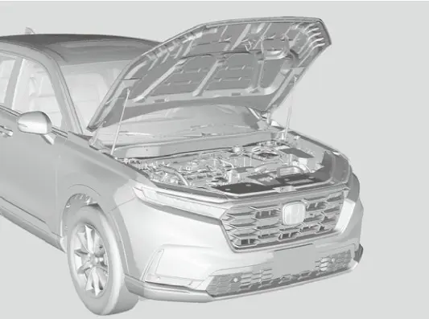
וואס איז אונטער דער האוד
ווען די האוד איז אפן, נעמט א מינוט צו פאסן יעדן טייל צום בילד:
- מאטאר אויל dipstick (מעסטשטעקל), (מאראנץ)
- מאטאר אויל אנפיל-דעקל, אויבן אויפן מאטאר
- קולענט רעזערוו טאנק און radiator cap
- ברעמז פלואיד רעזערוו טאנק
- ווינדשילד וואשער פליסיגקייט טאנק
- 12-וואלט באטעריע
ווען איר לערנט אייך איינמאל די ערטער, ווערט יעדער טשעק שפעטער גיך. דער לעיבל פונעם אייר קאנדישאנער איז אויך אונטער דער האוד.
מאטאר אויל
ניצט Honda Genuine Motor Oil, אדער א געקויפטן אויל פון דעם ריכטיגן טיפ און viscosity (געדיכטקייט) פאר דער דרויסנדיגער טעמפעראטור, ווי געוויזן אין דעם viscosity טשארט פונעם מאנואל. דער געשריבענער טעקסט אין אונזער מקור זאגט נישט דעם viscosity נומער אליין, דערפאר לייענט עס פון יענעם טשארט אינעם געדרוקטן מאנואל אדער פרעגט א דילער.
געקויפטער אויל מוז זיין API service SN אדער א העכערער גרעיד fuel-effci ient אויל, און ער זאל טראגן דעם API Certifci ation Mark, באקאנט אלס דער "Starburst." סינטעטישער אויל איז אויך גוט אויב ער טראגט דעם API Certification Seal און איז פון דעם באשטימטן viscosity גרעיד. דער קאר דארף נישט קיין אויל צוגאבן (additives)Honda . זאגט אז זיי קענען אפילו שעדיגן ווי דער מאטאר ארבעט און ווי לאנג ער האלט.
דער סימבאל ווייזט אז דער אויל איז energy conserving (שפארט ענערגיע) און פאסט צו די לעצטע פאדערונגען פונעם American Petroleum Institute. אין סטאר, זוכט דעם סימבאל אויף דער פארנטיגער זייט פון דער פלאש צוזאמען מיט דעם ריכטיגן viscosity. אויב ביידע זענען דארט, פאסט דער אויל צו די פאדערונגען פונעם מאנואל.
טשעקן דעם אויל שטאנד
Honda רעקאמענדירט צו טשעקן דעם אויל שטאנד יעדעס מאל וואס איר פילט אן גאז.
טשעקן דעם מאטאר אויל
- פארקט אויף א גלייכן ארט.
- ווארט בערך דריי מינוט נאכן אויסלעשן דעם מאטאר.
- ציט ארויס דעם מאראנץ dipstick.
- ווישט אים אפ מיט א ריינעם טוך אדער פאפיר האנטעך.
- שטופט אים אריין גאנץ טיף צוריק אין זיין לאך.
- ציט אים ווידער ארויס און לייענט דעם שטאנד. ער דארף זיין צווישן די אויבערשטע און אונטערשטע צייכנס.
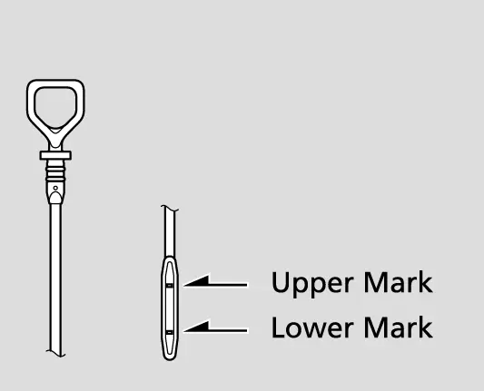
אויב דער שטאנד איז נאנט צו אדער אונטער דעם אונטערשטן צייכן, גיסט צו אויל פאמעלעך און היט אייך נישט צו פילן צופיל. אין געוויסע פאר-באדינגונגען איז נארמאל אז דער שטאנד זאל זיין איבער דעם אויבערשטן צייכן. אויב דאס זארגט אייך, פרעגט א דילער.
צוגיסן מאטאר אויל
- דרייט אפ און נעמט אראפ דעם מאטאר אויל אנפיל-דעקל.
- גיסט אויל פאמעלעך, א ביסל יעדעס מאל.
- לייגט צוריק דעם אנפיל-דעקל און פארשרויפט אים גוט.
- ווארט דריי מינוט און טשעקט נאכאמאל דעם dipstick.
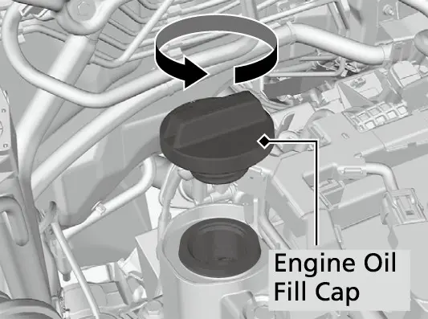
אויל און פילטער טוישן
רוב אייגנטימער לאזן טוישן דעם אויל אין א שאפ. דא איז דער פראצעס פונעם מאנואל צום וויסן. טוישט דעם אויל און פילטער לויט דער Maintenance Minder מעלדונג. דער מאטאר קען ווערן געשעדיגט אויב מען טוישט נישט רעגולער דעם אויל און פילטער.
טוישן דעם מאטאר אויל און פילטער
- לאזט ארבעטן דעם מאטאר ביז ער איז אויף נארמאלער ארבעט-טעמפעראטור, דערנאך לעשט אים אויס.
- עפנט די האוד און נעמט אראפ דעם מאטאר אויל אנפיל-דעקל.
- נעמט אראפ דעם under cover (דעקל) אונטערן קאר. זיינע Phillips-head שרויפן און גלייכע (slotted) שרויפן גייען ארויס מיט א °90 דריי קעגן דעם זייגער.
- נעמט ארויס דעם drain bolt און washer פון אונטן פונעם מאטאר און לאזט אויסרינען דעם אויל אין א פאסיגן כלי.
- נעמט ארויס דעם אויל פילטער און ווארפט אוועק דעם איבערגעבליבענעם אויל. מאכט זיכער אז דער אלטער gasket איז נישט צוגעקלעפט צום מאטאר; אויב יא, נעמט אים אראפ.
- ווישט ריין די פלאך פונעם מאטאר וואו דער פילטער קומט, שמירט א דינע שיכט נייעם אויל אויף דעם gasket פונעם נייעם פילטער, און שטעלט אריין דעם נייעם פילטער.
- לייגט א נייעם washer אויפן drain bolt, שטעלט אים צוריק אריין און פארשרויפט אים ביז 40(ft∙30 lbf)m∙N.
- גיסט אריין דעם רעקאמענדירטן אויל. די קאפאציטעט, מיטן פילטער, איז 3.7 US qt (3.5 L).
- לייגט צוריק דעם אנפיל-דעקל גוט, צינדט אן דעם מאטאר, לאזט אים ארבעטן עטליכע מינוט און טשעקט אויב עס רינט ביים drain bolt און פילטער.
- לעשט אויס דעם מאטאר, ווארט דריי מינוט, טשעקט דעם dipstick און גיסט צו אויב נויטיג.
- לייגט צוריק דעם under cover אין דער זעלבער ארדענונג ווי מען האט אים אראפגענומען.
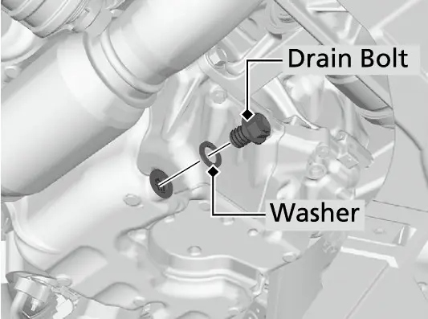
איר דארפט א ספעציעלן שליסל (wrench), וואס דילערס פארקויפן, צו ארויסנעמען דעם אויל פילטער. פאלגט די אנווייזונגען וואס קומען מיט דעם נייעם פילטער. אויב די Engine oil pressure low ווארענונג (נידעריגער אויל דרוק) ווייזט זיך נאכן אנצינדן, לעשט אויס דעם מאטאר און טשעקט אייער ארבעט. לייגט געניצטן אויל אין א פארמאכטן כלי און ברענגט אים צו א ריסייקלינג צענטער. ווארפט אים קיינמאל נישט אין מיסט און גיסט אים נישט אויף דער ערד.
קולענט, CVT פליסיגקייט, ברעמז פלואיד און וואשער פליסיגקייט
באשטימטע פליסיגקייטן
| פליסיגקייט | ספעציפיקאציע | ווער טשעקט |
|---|---|---|
| מאטאר קולענט | Honda Long Life Antifreeze/Coolant Type 2 | אייגנטימער, יעדעס מאל גאז אנפילן |
| CVT פליסיגקייט | Honda HCF-2 | נאר דער דילער |
| ברעמז פלואיד | Honda Heavy Duty Brake Fluid DOT 3 | אייגנטימער, יעדן חודש |
| וואשער פליסיגקייט | געקויפטע ווינדשילד וואשער פליסיגקייט | אייגנטימער |
| מאטאר אויל טויש קאפאציטעט | 3.7 US qt (3.5 L) מיטן פילטער | אייגנטימער אדער שאפ |
מאטאר קולענט
Honda קולענט Type 2 קומט שוין געמישט, 50 פראצענט antifreeze און 50 פראצענט וואסער. גיסט קיינמאל נישט צו לויטערן antifreeze אדער פשוט וואסער. די מישונג האלט קעגן פרירן ביז בערך 31°F− (−35°C). אויב דער קאר שטייט כסדר אין קעלטערע טעמפעראטורן, דארף מען פארגרעסערן די antifreeze קאנצענטראציע; פרעגט א דילער. גיסט נישט צו rust inhibitors (קעגן-זשאווער מיטלען) אדער אנדערע צוגאבן, ווייל זיי פאסן אפשר נישט צום קולענט אדער צו די מאטאר טיילן.
אויב Honda קולענט איז נישטא, קענט איר ניצן א באקאנטע מארקע פון א הויך-קוואליטעט non-silicate קולענט געמאכט פאר אלומיניום מאטארן, אלס צייטווייליגער ערזאץ. אויב מען ניצט ווייטער נישט-Honda קולענט, קען דאס גורם זיין זשאווער און א פעלער אינעם קיל-סיסטעם, דערפאר לאזט דעם סיסטעם אויסשווענקען און אנפילן מיט Honda קולענט וואס שנעלער.
טשעקן דעם קולענט רעזערוו טאנק
- מאכט זיכער אז דער מאטאר און radiator זענען קאלט.
- טשעקט דעם קולענט שטאנד אינעם רעזערוו טאנק.
- אויב ער איז אונטער דעם MIN צייכן, גיסט צו דעם באשטימטן קולענט ביז דעם MAX צייכן.
- אינספעקטירט דעם קיל-סיסטעם אויב עס רינט ערגעץ.
טשעקט דעם radiator נאר אויב דער רעזערוו טאנק איז אינגאנצן ליידיג.
טשעקן דעם radiator
- מאכט זיכער אז דער מאטאר און radiator זענען קאלט.
- דרייט דעם radiator cap א אכטל דריי קעגן דעם זייגער צו ארויסלאזן דעם דרוק.
- דריקט אראפ און דרייט דעם cap קעגן דעם זייגער צו אראפנעמען אים.
- טשעקט אז דער קולענט דערגרייכט ביזן אונטן פונעם אנפיל-האלדז, און גיסט צו קולענט אויב ער איז נידעריג.
- לייגט צוריק דעם cap און פארדרייט אים אינגאנצן.
גיסט פאמעלעך און ווישט גלייך אפ וואס עס פארגיסט זיך. קולענט קען שעדיגן טיילן אינעם מאטאר אפטייל.
CVT פליסיגקייט
אייער continuously variable transmission (CVT, טראנסמיסיע אן פעסטע גאנגען) ניצט Honda HCF-2. פרובירט נישט אליין צו טשעקן אדער טוישן די CVT פליסיגקייט. לאזט א דילער טשעקן דעם שטאנד און טוישן ווען נויטיג; דאס איז די ארבעט פון קאוד 3. מישט נישט HCF-2 מיט קיין אנדערע טראנסמיסיע פליסיגקייט. אן אנדערע פליסיגקייט קען שעדיגן ווי די טראנסמיסיע ארבעט און ווי לאנג זי האלט. יעדער שאדן פון א פליסיגקייט וואס איז נישט גלייך צו HCF-2 ווערט נישט געדעקט פון Honda'ס new vehicle limited warranty (גאראנטיע פאר נייע קארס).
ברעמז פלואיד
טשעקט די ברעמז פלואיד יעדן חודש. דער שטאנד דארף זיין צווישן די MIN און MAX צייכנס אויף דער זייט פונעם רעזערוו טאנק. דער שטאנד פאלט ווען די ברעמז פעדס ווערן אפגעריבן. אויב ער איז ביי אדער אונטער MIN, לאזט א דילער אינספעקטירן דעם קאר אויף רינען אדער אפגעריבענע פעדס וואס שנעלער. דער ברעמז סיסטעם אליין ווערט ערקלערט אין קאפיטל 17.
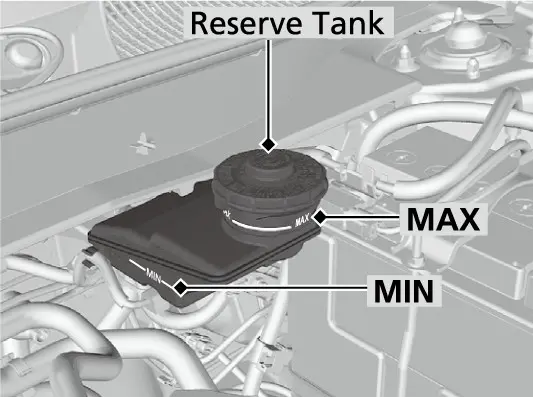
ווינדשילד וואשער פליסיגקייט
טשעקט די וואשער פליסיגקייט, און פילט אן דעם טאנק ווען ער איז נידעריג. גיסט פארזיכטיג אז עס זאל נישט איבערלויפן. ביי קאנאדישע מאדעלן זאגט א מעלדונג אויפן driver information interface ווען די פליסיגקייט איז נידעריג. ניצט נאר געקויפטע ווינדשילד וואשער פליסיגקייט. מאטאר antifreeze קען שעדיגן די פארב, און א מישונג פון עסיג און וואסער קען שעדיגן די וואשער פאמפ. ניצט נישט הארט וואסער פאר א לאנגע צייט, ווייל עס לאזט איבער קאלך.
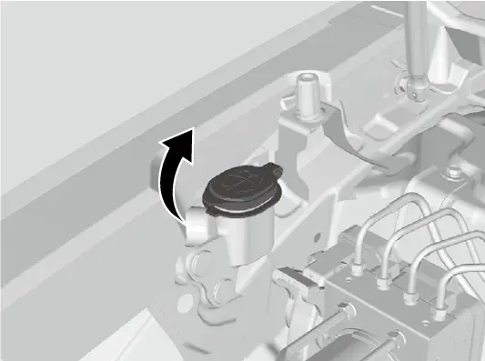
ווייפערס, קעבין פילטער, באטעריע און A/C
ווייפער בלעיטס
אפגעריבענע ווייפער גומע לאזט איבער שטרייפן און מאכט א גערויש, און די הארטע טיילן פונעם בלעיט קענען צעקראצן די שויב.
טוישן א פארנטיגן ווייפער בלעיט
- הייבט אויף ביידע ווייפער הענט, מיט דער maintenance position (סערוויס פאזיציע) וואס ווערט באשריבן אין דעם מאנואל'ס אפטייל וועגן אויפהייבן די פארנטיגע ווייפער הענט.
- דריקט דעם לאק-טאב און רוקט אראפ דעם אלטן בלעיט פון דער האנט.
- רוקט אריין דעם נייעם בלעיט אויף דער האנט ביז ער קנאקט זיך אריין אויפן ארט.
- לאזט אראפ ביידע הענט לייכט.
- שטעלט דעם Power מאדָע אויף ON און רירט דעם ווייפער שאלטער איינמאל צו MIST. די הענט קערן זיך צוריק צו זייער געווענליכע פאזיציע.
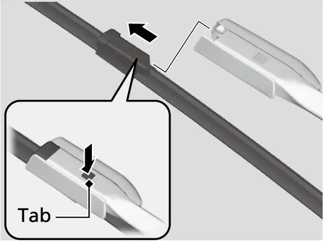
הינטן ווערט נאר די גומע געטוישט.
טוישן די גומע פונעם הינטערשטן ווייפער בלעיט
- הייבט אויף די הינטערשטע ווייפער האנט. צווינגט זי נישט ארויף; צו הויך אויפהייבן קען זי שעדיגן.
- דרייט ארויף דעם אונטערשטן עק פונעם בלעיט ביז ער קומט אראפ פון דער האנט.
- רוקט ארויס די גומע פונעם בלעיט.
- טראגט איבער די האלטערס פון דער אלטער גומע צו דער נייער.
- רוקט אריין די נייע גומע אינעם האלטער און מאכט זיכער אז זי זיצט ריכטיג.
- לייגט צוריק דעם בלעיט אויף דער האנט און לאזט אראפ די האנט לייכט אז זי זאל נישט קלאפן אין דער הינטערשטער שויב.
Dust and pollen filter
אייער EX האט אייר קאנדישאן מיט א לופט-פילטער סיסטעם. זיין dust and pollen filter (שטויב און פאלן פילטער) כאפט פאלן, שטויב און אנדערע שמוץ, און דער Maintenance Minder זאגט אייך ווען אים צו טוישן אונטער קאוד 2. Honda רעקאמענדירט אים צו טוישן פריער אין זייער שטויביגע געגנטן. א פראקטישער סימן אז מען דארף אים טוישן: די לופט פון די ווענטס ווערט קענטיג שוואכער און די פענסטער ווערן גרינג פארנעפלט. דער מאנואל זאגט זיך צו ווענדן צו א דילער פארן טוישן. דער מאטאר air cleaner element איז אויך א טייל פון קאוד 2, און דער טעקסט פונעם מאנואל דא גיט נישט קיין אנווייזונג ווי אים אליין צו טוישן. קליימעט קאנטראלן ווערן ערקלערט אין קאפיטל 12.
12-וואלט באטעריע
טשעקט די טערמינאלן אויף זשאווער יעדן חודש. א סענסאר אויף דעם נעגאטיוון טערמינאל פאלגט נאך דעם צושטאנד פון דער באטעריע. אויב דער סענסאר האט א פראבלעם, ווייזט זיך א ווארענונג מעלדונג, און א דילער זאל אינספעקטירן דעם קאר. אויב די באטעריע ווערט אפגעטשעפעט אדער ווערט ליידיג, ארבעט נישט דער אודיא סיסטעם ביז מען ריסעט אים; ביי קאנאדישע מאדעלן דארף מען אויך ריסעטן דעם immobilizer. קאפיטל 20 ערקלערט דעם עלעקטרישן סיסטעם אינגאנצן.
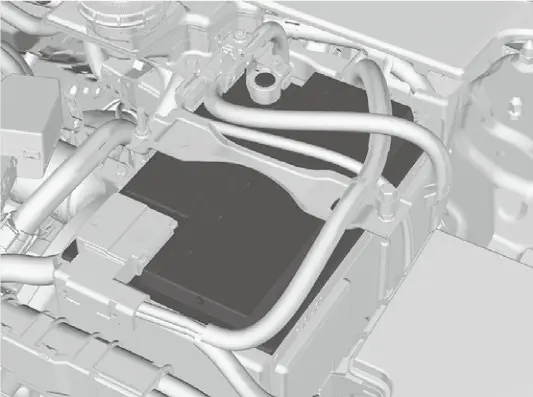
אייר קאנדישאן refrigerant
דער refrigerant (קיל-גאז) איז ברענבאר און קען זיך אנצינדן בשעת סערוויס אויב מען פאלגט נישט די ריכטיגע פראצעדורן. ער שאדט אויך די סביבה אויב מען לאזט אים ארויס. לויט SAE J2845 זאל דעם refrigerant סיסטעם מאכן סערוויס נאר אויסגעלערנטע און צערטיפיצירטע טעכניקער. שטעלט קיינמאל נישט אריין אן evaporator פון א געניצטן אדער צעבראכענעם קאר. נייע ערזאץ evaporators מוזן זיין צערטיפיצירט און באצייכנט אז זיי פאסן צו SAE J2842. דער ספעציפיקאציע לעיבל איז אונטער דער האוד. לאזט די ארבעט אינגאנצן פאר א קוואליפיצירטן שאפ.
טייערס, רעדער, ברעמזן און לייכטן
ווען מען ראטירט די טייערס ווען קאוד 1 ווייזט זיך, ווערן זיי גלייכער אפגעריבן און זיי האלטן לענגער. טייערס אן ראטאציע-צייכנס גייען לויטן מוסטער אינעם בילד פונעם מאנואל. טייערס מיט א directional (איין-ריכטונג) טרעד גייען נאר פון פארנט צו הינטן, קיינמאל נישט פון זייט צו זייט, און מען שטעלט זיי אן מיטן ראטאציע-צייכן פאראויס. דער torque (פארשרויפן כח) פאר די ראד ניסלעך ביי די סטאנדארט טייערס איז 108(ft∙80 lbf)m∙N.

Honda'ס ספעציפיקאציעס ווייזן 18-אינטש אלוי רעדער מיט 235/60R18 טייערס פארן EX. טשעקט דעם דרוק און טרעד יעדן חודש. די ברעמזן זענען 12.3-אינטש ווענטילירטע פארנטיגע דיסקס און 12.2-אינטש פולע הינטערשטע דיסקס, און מען אינספעקטירט זיי ביי יעדן B סערוויס. צווישן סערוויסעס, האלט אן אויג אויף דעם ברעמז פלואיד שטאנד, ווייל א פאלנדיגער שטאנד קען מיינען אפגעריבענע פעדס.
וועגן די לייכטן: גייט ארום דעם קאר יעדן חודש מיט די העדלייטס, בלינקערס, האזארד לייכטן און ברעמז לייכטן אן. ניצט דעם אפשפיגל אויף א וואנט, אדער לאזט א העלפער קוקן בשעת איר זיצט אויפן דרייווער'ס זיץ. די גלעזער פון די לייכטן קענען זיך צייטווייליג פארנעפלען נאך רעגן אדער א קאר וואש, און דאס איז נארמאל. אויב איר זעט אסאך וואסער אדער גרויסע טראפנס זיך קלייבן אינעווייניג אין א גלאז, לאזט א דילער עס אינספעקטירן.
אינעווייניגע און דרויסנדיגע פלעג
רייניגט דעם שטאף אינעווייניג מיט א נאסן טוך און א מישונג פון מילדע זייף און ווארעם וואסער, דערנאך ווישט אפ די רעשטלעך מיט א ריינעם טוך. פארגיסט נישט קיין פליסיגקייטן אינעם קאר, ווייל עלעקטרישע מכשירים קענען זיך קאליע מאכן. ניצט קיינמאל נישט silicone-based שפרייען אויף שאלטערס אדער אודיא קנעפלען. זיי קענען גורם זיין פעלערן אדער אפילו א פייער; אויב עס פאסירט צופעליג, ווענדט אייך צו א דילער. ניצט נישט קיין alkali סאלווענטס אדער ארגאנישע סאלווענטס ווי בענזין (benzene) אדער גאז. געוויסע כעמיקאלן און לופט-פרישערס קענען פארפארבן, צעקנייטשן אדער צעשפאלטן פלאסטיק טיילן און שטאף, דערפאר ווישט זיי אפ מיט א טרוקענעם טוך.
רייניגט די סיט בעלטס מיט א ווייכער בארשט און מילד זייפיג וואסער, דערנאך לאזט זיי אויסטרוקענען אין דער לופט. ווישט די אינעווייניגע זייט פון דער הינטערשטער שויב אין דער ריכטונג פון די defroster דראטן. האלט וואסער און גלאז-רייניגער אוועק פונעם עלעקטראנישן דעקל ארום דעם הינטער-שפיגל.
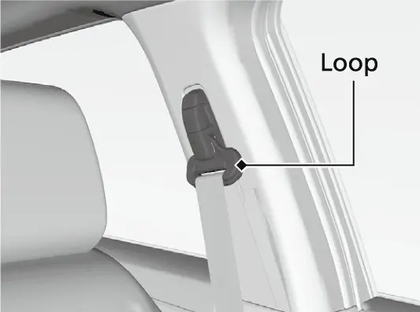
דער דרייווער'ס פלאר מאט ווערט צוגעהאקט צו האקן אין פלאר וואס האלטן אים אפ פון ארויסרוקן פאראויס אונטער די פעדאלן. לייגט קיינמאל נישט נאך א מאט אויף אים. אויב איר ניצט מאטס וואס זענען נישט געקומען מיטן קאר, מאכט זיכער אז זיי זענען געמאכט פאר דעם קאר, פאסן ריכטיג און ווערן פארשלאסן אויף די האקן. די הינטערשטע מאטס מוזן אויך ליגן ריכטיג אז זיי זאלן נישט שטערן די פארנטיגע זיצן.
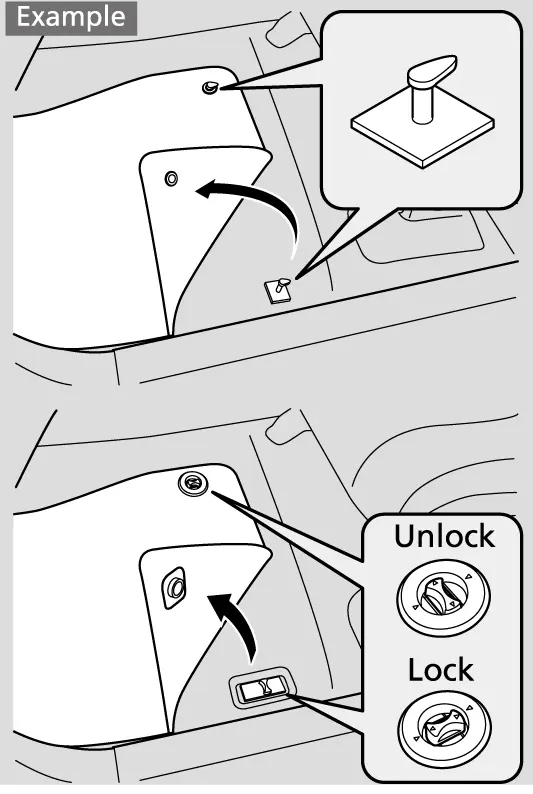
וואשט דעם קאר רעגולער. וואשט אים אפטער נאכן פארן אויף געזאלצענע וועגן, נעבן דעם ים, אדער ווען עס איז דא טאר, סאזשע, פויגל-מיסט, אינסעקטן אדער בוים-זאפט אויף דער פארב. טשעקט די פארב אויף קראצן און פאררעכט זיי גיך, ווייל א קראץ קען פירן צו זשאווער. א גוטע שיכט ווקס באשיצט די פארב; לייגט עס נאכאמאל ווען עס גייט אראפ.
- שפריצט נישט קיין וואסער אין די לופט-אריינגאנג ווענטס, גלייך אויף דעם גאז טירל, אדער אינעם capless אנפיל-לאך ווען דאס טירל איז אפן.
- פארשליסט די טירן בשעת'ן וואשן.
- אין אן אויטאמאטישן קאר וואש, פאלגט די אנווייזונגען פונעם וואש און לייגט צו די שפיגלען.
- מיט א פרעשור וואשער, האלט דעם נאזל גוט ווייט, היט אייך ארום די פענסטער, און שפריצט נישט גלייך אויף דער קאמערע.
- ניצט קיינמאל נישט הויכן דרוק אינעם מאטאר אפטייל; ניצט אנשטאט דעם נידעריגן דרוק און מילדע זייף.
- אויב איר דארפט אויפהייבן די פארנטיגע ווייפערס, שטעלט זיי קודם אויף די maintenance position.
- ווישט גלייך אפ גאז, אויל, קולענט אדער באטעריע פליסיגקייט פון די באמפערס און פלאסטיק טיילן מיט א ווייכן טוך און ריין וואסער.
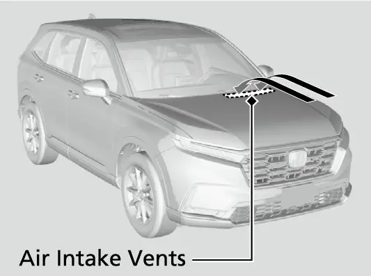
נאכן וואשן, פארט א קורצע שטרעקע און ברעמזט עטליכע מאל פארן פארקן, כדי די נאסע ברעמזן זאלן נישט פארזשאווערן און זיך צוקלעפן. רייניגט די אלוי רעדער מיט א שוואם און מילדע זייף, נישט מיט הארטע בארשטן אדער שארפע ראד-רייניגערס, און ווישט זיי טרוקן ווען זיי זענען נאך נאס כדי צו פארמיידן וואסער פלעקן.
טיילן, צוגאבן און ענדערונגען
Honda רעקאמענדירט Honda Genuine Parts און פליסיגקייטן פאר יעדן סערוויס. ענדערט נישט דעם קאר אויף אן אופן וואס ווירקט אויף דער פירונג, סטאביליטעט אדער פארלעסליכקייט, און פרובירט נישט צו פאררעכטן עלעקטרישע טיילן. מאכט נישט צו קיין צוגאבן אויף דער ווינדשילד. לייגט נישט קיין נישט-Honda זאכן נעבן ערטער באצייכנט SRS AIRBAG, אויף די זיצן, אויף די פילערס (זייל) אדער נעבן די זייטיגע פענסטער. פארן אריינשטעלן יעדע עלעקטראנישע צוגאב, לאזט דעם אינסטאלירער זיך פארבינדן מיט א דילער.
דער דיאגנאסטיק פארט אונטערן דעשבארד (OBD-II/SAE J1962) איז נאר פאר דיאגנאסטיק געצייג אדער מכשירים וואס Honda האט באשטעטיגט. אנדערע אריינשטעק-מכשירים קענען אויסליידיגן די באטעריע, גורם זיין פעלערן אדער שעדיגן די עלעקטראניק פונעם קאר.
אפטע שאלות
אפטע פראגעס
פראגע: מוז איך גיין צו א Honda דילער כדי צו האלטן מיין גאראנטיע?
ענטפער: ניין. דער מאנואל זאגט אז דילער סערוויס איז נישט פארלאנגט. אין די פאראייניגטע שטאטן מעג יעדער שאפ אדער מענטש מאכן סערוויס אויף די עמיסיע טיילן מיט EPA-certifei d טיילן. האלט רעקארדס אינעם מעינטענענס ביכל.
פראגע: דער Maintenance Minder ווייזט 40% נאך א יאר פון ווייניג פארן. קען איך ווארטן?
ענטפער: ניין. אויב עס ווייזט זיך נישט קיין מעלדונג אין משך פון 12 חדשים נאכן לעצטן ריסעט, טוישט דאך דעם אויל. טוישט די ברעמז פלואיד יעדע 3 יאר אויב קאוד 7 האט זיך נישט געוויזן אין משך פון 36 חדשים.
פראגע: קען איך אליין צוגיסן CVT פליסיגקייט?
ענטפער: ניין. Honda זאגט מען זאל זי נישט אליין טשעקן אדער טוישן. לאזט עס מאכן א דילער, נאר מיט Honda HCF-2.
פראגע: מיין אויל שטאנד ווייזט א ביסל איבער דעם אויבערשטן צייכן. איז עפעס נישט אין ארדענונג?
ענטפער: דער מאנואל זאגט אז דאס קען זיין נארמאל אין געוויסע פאר-באדינגונגען. גיסט קיינמאל נישט צו אויל איבער דעם אויבערשטן צייכן, און פרעגט א דילער אויב עס זארגט אייך.
פראגע: גילט קאוד 6 פאר מיין EX?
ענטפער: נאר אויב אייער קאר האט AWD (פיר-ראד דרייוו), וואס האט א rear differential. EX מאדעלן מיט פראנט-ראד דרייוו האבן נישט קיין rear differential פליסיגקייט צו טוישן.
פראגע: וואס טו איך נאך א טייער ראטאציע?
ענטפער: ביי אמעריקאנער מאדעלן, קאליברירט דעם TPMS יעדעס מאל וואס מען ראטירט די טייערס, און מאכט זיכער אז די ראד ניסלעך זענען פארשרויפט ביז ft∙80 lbf.
הויפט פונקטן
- פאלגט דעם Maintenance Minder: קאוד A אדער B מיט אונטער-קאודס 1 ביז 7 זאגן אייך גענוי וואס מען דארף מאכן.
- מאכט אפוינטמענט פאר סערוויס ביי דער ערשטער מעלדונג (15% אויל לעבן); פארט קיינמאל נישט ביי Past Due.
- ריסעט נאר די זאכן וואס זענען טאקע געמאכט געווארן, דורך האלטן דאס לינקע selector ראדל בערך 10 סעקונדעס.
- טוישט דעם אויל כאטש איינמאל א יאר און די ברעמז פלואיד כאטש יעדע 3 יאר, נישט קוקנדיג וואס דער דיספליי זאגט.
- טשעקט אויל און קולענט יעדעס מאל גאז אנפילן; ברעמז פלואיד, טייערס, לייכטן און באטעריע טערמינאלן יעדן חודש.
- ניצט די באשטימטע פליסיגקייטן: Honda HCF-2, DOT 3 (קיינמאל נישט DOT 5) און Type 2 קולענט.
- די אויל טויש קאפאציטעט איז 3.7 US qt מיטן פילטער; דער drain bolt torque איז ft∙30 lbf; די ראד ניסלעך זענען ft∙80 lbf.
- קאליברירט דעם TPMS נאך יעדער טייער ראטאציע (אמעריקאנער מאדעלן).